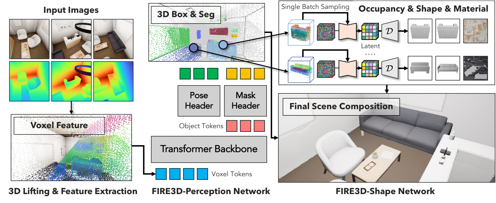
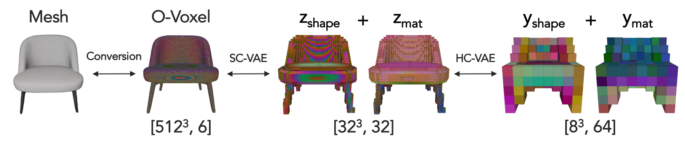

🔥FIRE3D: Feed-forward Interactive 3D Scene Reconstruction Within A Minute
From an unsegmented image or casual video, one feed-forward system
discovers the objects and estimates their 6-DoF poses, then reconstructs
complete textured assets in under a minute.
No supplied object masks, boxes, poses, or prompts. Fire3D predicts the scene decomposition and
reconstructs complete, textured, independently editable assets, including the room background.
The missing capability
What other pipelines ask you to provide, Fire3D learns to predict.
Strong 3D methods usually solve one part of the scene problem. Perception systems stop at boxes and
masks. Object generators start after an object has been selected. Optimization-based systems recover
a scene, but pay a new optimization cost for every capture. Fire3D closes these stages in one learned,
feed-forward system.
01 / Joint perception
No object poses and segmentations input.
The user supplies an RGB image or casual video. Pi3 estimates point maps and camera poses; Fire3D
predicts the object count, 3D masks, oriented boxes, and 6-DoF poses without supplied masks, boxes,
object poses, or prompts.
02 / Complete output
Simulation-ready scene, not a rendering field.
Every predicted entity becomes an amodally complete mesh with PBR appearance in the metric scene.
Foreground objects remain independently transformable, while structural surfaces are reconstructed
as a background instance.
03 / Scene-scale generation
A scene is processed as a batch of objects.
HC-VAE compresses each shape and material field by 32×, allowing flow sampling, VAE decoding,
and mesh conversion to run across as many as 16 objects in parallel on one GPU, without test-time
optimization.
Positioning
One system spans perception, completion, appearance, and scene assembly.
Representative methods are grouped by the part of the problem they are designed to solve.
Method familyPrimary strengthMissing or external stageScene-level outcome
Scene perceptionSceneScript · EFM3D · BoxerBoxes, masks, layoutsComplete geometry and materialScene understanding, not editable assets
Selected-object generationSAM 3D Objects · ShapeR · TRELLIS.2Amodal object reconstructionObject selection, masks, detection, or per-object preprocessingStrong objects; scene decomposition remains external
Per-scene optimizationHoloScene · SimReconObject-compositional scenesSearch, fitting, or iterative refinement for each captureEditable scenes at minutes-to-hours cost
Fire3DSingle image or casual videoJoint instance perception and reconstructionNo object-level perception input; no per-scene optimizationComplete textured foreground and background in under 60 seconds
Method
A single learned path from observations to simulation-ready 3D scenes.
Fire3D lifts visual evidence into 3D, predicts the scene decomposition, completes each entity in a
canonical frame, and places the reconstructed assets back into their predicted metric layout.

Unified perception and reconstruction. Predicted instance point clouds condition cascaded sparse-structure, shape, and PBR flow models; decoded assets are assembled with the predicted object poses.
Perceive
DINOv3 features are lifted into a shared 3D representation that predicts validity, instance masks, oriented extent, and 6-DoF pose.
Complete
Canonicalized instance points condition structure, shape, and material flows, completing unseen geometry rather than meshing only observed surfaces.
Assemble
Complete textured meshes are transformed back into the world frame as physically decoupled foreground assets and a static background instance.
Why a full room fits
HC-VAE makes multi-object generation a scene operation.
SC-VAE comes from TRELLIS.2; HC-VAE is introduced by Fire3D. We retain the pretrained
SC-VAE representation and add a second, hierarchical compression stage for both shape and material.
This changes the practical unit of inference from one selected object to a batch of scene entities.
TRELLIS.2SC-VAE latent32³ × 32
Fire3D adds→
Our contributionHC-VAE latent8³ × 64
Object code
256 KBshape and material latents
Compression
32×beyond the SC-VAE latent
Inference batch
16 objectson one 80 GB A100
End to end
< 60 s60 frames, more than 12 instances

Hierarchical compression for shape and material. Fire3D's lightweight sparse 3D encoders compress the SC-VAE fields adopted from TRELLIS.2 into compact latents for batched flow matching and decoding.
Measured trade-off
32× compression with a small reconstruction change
Selected geometry and rendering metrics from the paper's VAE comparison.
Representation
Latent
Toys4K
Imaginarium
CD ↓
F1 ↑
PSNR ↑
CD ↓
F1 ↑
PSNR ↑
SC-VAE only TRELLIS.2
32³ × 32
0.261
0.997
26.801
0.407
0.919
21.966
SC-VAE + HC-VAE Fire3D
8³ × 64
0.269
0.991
26.635
0.413
0.914
21.665
Interactive 3D Explorer
Inspect the observations, perception, and reconstruction.
Eight held-out scenes are presented in the shared reconstruction coordinate frame. Switch layers to
inspect the evidence, predicted instances and boxes, or the final assets.
01
Compare representations
Switch among RGB input, predicted perception, and reconstructed assets.
02
Navigate and combine
Drag to orbit, scroll to zoom, and toggle individual scene layers.
03
Edit an instance
In Reconstruction, click any mesh and transform it in its local frame.
Dataset
View
FloorPlan 312RGB input point cloud
Loading scene
RGB observations
Sampled from the posed input sequence
Evidence
The complete task, tested one claim at a time.
Each full-width comparison isolates a different requirement: perception, object completion,
end-to-end reconstruction, single-image transfer, and cross-dataset generalization.
Scene decomposition
Discovering objects directly from unsegmented observations
Fire3D predicts oriented boxes and instance masks rather than receiving them. Green boxes are correct predictions, red boxes are poorly localized predictions, and orange boxes are missed ground-truth objects.
Controlled reconstruction study
Amodal assets from matched ground-truth perception
All methods receive the same ground-truth instances and poses, isolating reconstruction quality. Fire3D recovers complete geometry and texture from native 3D conditions, while ShapeR is geometry-only and SAM 3D Objects is adapted from its single-view setting.
End-to-end scene reconstruction
No masks, boxes, object poses, or known object count
The methods receive the same visual capture. Fire3D performs its own perception and reconstructs textured assets in their predicted scene layout; the EFM3D + ShapeR pipeline composes separate detection and geometry stages.
Single-image transfer
Automatic scene decomposition and reconstruction from one view
A single RGB image and its estimated point map are sufficient for Fire3D to discover and reconstruct the scene objects automatically, without user clicks or masks.
Generalization
Complete foreground and background across unseen scene domains
One model reconstructs object-compositional scenes across synthetic environments and realistic captures, including the complete predicted background instance.
Interactive Applications
Reconstructed once. Used as real scene assets.
Object-level meshes support interaction, robotics, and visual effects without a separate scene conversion step.
Dynamic VFXScene-aware effects interact with reconstructed geometry.RoboticsObject-compositional assets enable embodied interaction.GamingComplete scene elements remain editable and transformable.
Nearest alternatives
Where the unified design changes the trade-off.
Matched views test Fire3D against optimization-based reconstruction, scene perception, object completion, and a composed detector-to-generator pipeline.
Optimization-based scene reconstruction
Fire3D reconstructs a scene in about one minute; HoloScene requires approximately eight hours.
View 1 / 16
3D scene perception
Correct predictions are green, poorly localized predictions are red, and missed ground-truth boxes are orange.
3D IoU threshold 0.25
Object reconstruction with matched perception
Instance-color geometry uses the same white-background rendering protocol for all methods.
7.46× faster per object
End-to-end modular baseline
Boxer, SAM2, and TRELLIS.2 are composed into a direct modular baseline on the same input scenes.
Open Release
Reproduce the complete pipeline.
The release includes frozen inference protocols, model checkpoints, processed examples for four input
domains, camera sampling, and physically based scene rendering.
@misc{xia2026fire3d,
title = {FIRE3D: Feed-forward Interactive 3D Scene Reconstruction Within A Minute},
author = {Xia, Hongchi and Cheng, Tianhang and Ma, Wei-Chiu and Wang, Shenlong},
year = {2026}
}